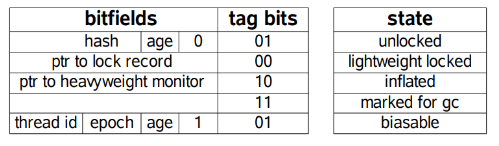
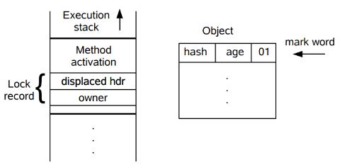
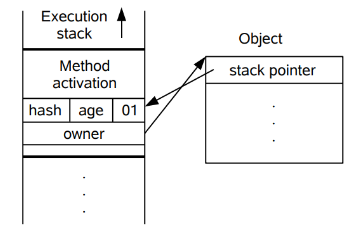
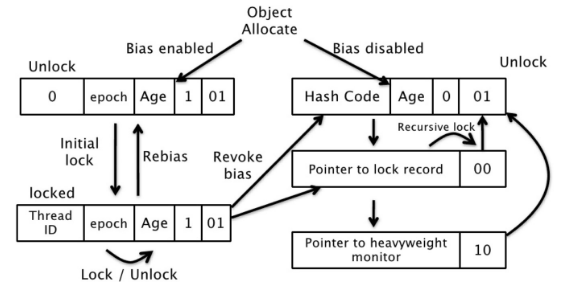

0x00. TOC
0x01. 字节码分析
先来看下利用synchronized实现同步的基础：Java中的每一个对象都可以作为锁。具体表现为以下3种形式。
- 普通同步方法：锁是
当前实例对象。 - 静态同步方法：锁是当前类的
Class对象。 - 同步方法块：锁是
synchronized括号里配置的对象。
从JVM Spec中可以看到synchonized在 JVM 里的实现原理，JVM 基于进入和退出Monitor对象来实现方法同步和代码块同步，但两者的实现细节不一样。以下面代码为例：
package org.jordon.sync;
import java.util.ArrayList;
import java.util.List;
public class SyncByteCodeTest {
private static List<String> list = new ArrayList<>();
//当前实例的锁
public synchronized void add1(String s){
list.add(s);
}
//SynTest.class 锁
public static synchronized void add2(String s){
list.add(s);
}
//SynTest.class 锁
public void add3(String s){
synchronized(SyncByteCodeTest.class){
list.add(s);
}
}
//当前实例的锁
public void add4(String s){
synchronized(this){
list.add(s);
}
}
}
代码块同步是使用monitorenter和monitorexit指令实现的，对于使用同步代码块进行同步的add3和add4两个方法，其中add1和add4均以当前实例作为锁，而add2和add3则均以SyncByteCodeTest的Class对象作为锁，下面看下同步代码块的字节码，可以见到add3和add4的字节码指令大致一样，差别主要在第一句：TOC
- 在
add3中使用同步代码块锁定SyncByteCodeTest的Class对象，所以对应操作先是ldc #4，对应的语义是将在第四个常量池项目中的int、long或String类型数据从常量池中推送到栈顶，而对应的数据经过CONSTANT_Class_info项目中name_index指向一个bytes为org/jordon/sync/SyncByteCodeTest的CONSTANT_Utf8_info，所以说了这么多是把字符串org/jordon/sync/SyncByteCodeTest，即当前类的全限定名推送到栈顶。接下来是dup指令，查询虚拟机字节码指令表可知，该指令意义是复制栈顶数值并将复制值压入栈顶， - 在
add4中同样使用同步代码块，锁定的是this引用指向的SyncByteCodeTest对象，所以很自然地，将第一个引用类型的数据推送到栈顶，而一个非静态方法中默认的第零个引用变量用来存储的恰恰是this引用信息，即此处将this引用的数据推送到栈顶。 - 在获取到待锁定的对象的相关信息后，
add3和add4两个方法都是把锁信息复制一份存到一个本地变量中，估计是标记该方法的monitor为SyncByteCodeTest的Class对象或者this引用，下面的monitorenter指令则是某个线程尝试去获取该monitor的所有权。 - 当线程咋临界区的操作结束后，将释放独占的
monitor，这时先将方法的monitor信息推送到栈顶，即aload_2指令，留待monitorexit指令进行作一些判断。

monitorenter指令是在编译后插入到同步代码块的开始位置，而monitorexit是插入到方法结束处和异常处，JVM 要保证每个monitorenter必须有对应的monitorexit与之配对。任何对象都有一个 monitor 与之关联，当且一个 monitor 被持有后，它将处于锁定状态。线程执行到monitorenter指令时，将会尝试获取对象所对应的monitor的所有权，即尝试获得对象的锁。下面基于 JVMS 更进一步阐述：TOC
- monitorenter: 每个对象都与一个
monitor类型的数据进行关联，为了实现某个临界区的同步需要各线程竞争与该临界区绑定的monitor，当某个临界区相应的monitor被某个线程占用后，monitor或者说临界区处于锁定状态，其他尝试获取该monitor的线程则必须遵循同步的忙则等待原则。获取monitor的过程大致如下- 如果
monitor的进入数为0，则该线程直接进入monitor，然后将进入数设置为1，该线程即为monitor的所有者和临界区的独占者。 - 如果当前线程已经占有该
monitor，即为重入，直接将monitor的进入数加1。 - 如果其他线程已经占用了
monitor，则该线程进入阻塞状态，直到monitor的进入数为0，再重新尝试获取monitor的所有权。
- 如果
- monitorexit: 执行该操作的线程必须是临界区
monitor的持有者，指令执行时，monitor的进入数减1，如果减1后进入数为0，那线程退出monitor，不再是这个monitor的所有者。其他被这个monitor阻塞的线程可以尝试去获取这个monitor的所有权。
通过看add1和add2这两个同步方法的字节码指令集可以发现，其中并没有使用monitorenter和monitorexit的指令对，而只是简单地设置方法访问标记ACC_SYNCHRONIZED和ACC_STATIC，即方法同步在虚拟机指令层面是使用另外一种不同于代码块同步的方式实现的，细节在JVM规范里并没有详细说明。但是，方法的同步同样可以使用这两个指令来实现，本质上都是对一个对象的监视器进行获取。TOC

需要注意的是add1和add4使用同一个对象作为锁，所以它们彼此互斥，同理add2和add3也彼此互斥，但是前两者中的任何一个与后两者中的任何一个都不互斥。有一个面试题是：当一个线程进入某个对象的synchronized实例方法后，其他线程能否进入此对象的其他方法？
答案自然是可以的，如果此对象的其他方法没有使用synchronized的话。当然对于静态的同步方法，它们属于类，严格意义上并不在对象的其他方法这个定义范畴，若真要考虑，由于类同步方法锁住是类的Class对象，此时其他线程理所当然地可以尝试获取一个不同于this的锁。
0x02. 锁优化
为了在线程间更高效地访问共享变量、以及解决竞争问题，从而提高程序执行效率，JDK1.6引入如适应性自旋（Adaptive Spinning）、锁消除（Lock Elimination）、锁粗化（Lock Coarsening）、轻量锁（Lightweight Locking）和偏向锁（Biased Locking）等锁优化技术。TOC
1. 自旋锁
互斥同步进入阻塞状态的开销都很大，应该尽量避免。在许多应用中，共享数据的锁定状态只会持续很短的一段时间。自旋锁的思想是让一个线程在请求一个共享数据的锁时执行忙循环（自旋）一段时间，如果在这段时间内能获得锁，就可以避免进入阻塞状态。
自旋锁虽然能避免进入阻塞状态从而减少开销，但是它需要进行忙循环操作占用 CPU 时间，它只适用于共享数据的锁定状态很短的场景。
在 JDK 1.6 中引入了自适应的自旋锁。自适应意味着自旋的次数不再固定了，而是由前一次在同一个锁上的自旋次数及锁的拥有者的状态来决定。如果一个刚刚获得过锁的线程，第二次来自旋等待，此时另一个线程正在运行，则虚拟机认为这次自旋很可能再次成功，进而它将允许自旋等待持续更长的时间。
2. 锁消除
锁消除是指虚拟机即时编译器对于被检测出不可能存在竞争的共享数据的锁进行消除。主要是通过逃逸分析来支持，如果堆上的共享数据不可能逃逸出去被其它线程访问到，那么就可以把它们当成私有数据对待，也就可以将它们的锁进行消除。对于一些看起来没有加锁的代码，其实隐式的加了很多锁。例如下面的字符串拼接代码就隐式加了锁：TOC
public static String concatString(String s1, String s2, String s3) {
return s1 + s2 + s3;
}
String 是一个不可变的类，编译器会对 String 的拼接自动优化。在 JDK 1.5 后，会转化为 StringBuffer 对象的连续 append() 操作：
public static String concatString(String s1, String s2, String s3) {
StringBuffer sb = new StringBuffer();
sb.append(s1);
sb.append(s2);
sb.append(s3);
return sb.toString();
}
因为 StringBuffer 每个 append() 方法使用 synchronized 修饰。虚拟机观察变量 sb，很快就会发现它的动态作用域被限制在 concatString() 方法内部。也就是说，sb 的所有引用永远不会逃逸到 concatString() 方法之外，其他线程无法访问到它，因此可以进行消除。
3. 锁粗化
尽管同步的使用原则之一是尽量限制其作用范围，但如果在小范围内一系列的连续操作都对同一个对象反复加锁和解锁，频繁的加锁操作就会导致性能损耗。TOC
上面有关锁消除的示例代码中连续的 append() 方法就属于这类情况。如果虚拟机探测到由这样的一串零碎的操作都对同一个对象加锁，将会把加锁的范围扩展（粗化）到整个操作序列的外部。对于上面关于锁消除的示例代码就是扩展到第一个 append() 操作之前直至最后一个 append() 操作之后，这样只需要加锁一次就可以了。
4. 轻量级锁
JDK 1.6 引入了偏向锁和轻量级锁，从而让锁拥有了四个状态：无锁状态（unlocked）、偏向锁状态（biasble）、轻量级锁状态（lightweight locked）和重量级锁状态（inflated）。
以下是 HotSpot 虚拟机对象头的内存布局，这些数据被称为Mark Word。其中 tag bits 对应了五个状态，这些状态在右侧的 state 表格中给出。

4.1 加锁过程
对于轻量级锁，当线程进入同步块时，如果同步对象没有被锁定（锁标记为 01），下图左侧所示，虚拟机将现在当前线程的栈帧上创建一个称为 Lock Record 的区域，用于存放锁对象的 Mark Word 的拷贝，而右侧是一个锁对象，包含了 Mark Word 和其它信息。

轻量级锁是相对于传统的重量级锁而言，它使用 CAS 操作来避免重量级锁使用互斥量的开销。对于绝大部分的锁，在整个同步周期内都是不存在竞争的，因此也就不需要都使用互斥量进行同步，可以先采用 CAS 操作进行同步，如果 CAS 失败了再改用互斥量进行同步。
当尝试获取一个锁对象时，如果锁对象标记为 01，说明锁对象的锁未锁定（unlocked）状态。此时虚拟机在当前线程的虚拟机栈中创建 Lock Record，然后使用 CAS 操作将对象的 Mark Word 更新为 Lock Record 指针。如果 CAS 操作成功了，那么线程就获取了该对象上的锁，并且对象的 Mark Word 的锁标记变为 00，表示该对象处于轻量级锁状态。

如果 CAS 操作失败了，虚拟机首先会检查锁对象的 Mark Word 是否指向当前线程的虚拟机栈，如果是的话说明当前线程已经拥有了这个锁对象，那就可以直接进入同步块继续执行，否则说明这个锁对象已经被其他线程线程抢占了。如果有两条以上的线程争用同一个锁，那轻量级锁就不再有效，要膨胀为重量级锁。
4.2 解锁过程
解锁过程也是通过 CAS 操作来进行的，如果对象的 Mark Word 仍然指向着线程的锁记录，那就用 CAS 操作把 Displaced Mark Word 替换回锁对象，如果替换成功，整个同步过程就完成了。如果替换失败，说明有其他线程尝试过获取该锁，那就要在释放锁的同时，唤醒被挂起的线程。TOC
轻量级锁能提升程序同步性能的依据是“对于绝大部分的锁，在整个同步周期内都是不存在竞争的”，这是一个经验数据。在没有锁竞争的情况下，轻量级锁使用 CAS 操作避免了使用互斥量的开销，但如果存在锁竞争，除了互斥量的开销外，还额外发生了CAS操作，因此在有竞争的情况下，轻量级锁会比传统的重量级锁更慢。
5. 偏向锁
偏向锁也是JDK 1.6中引入的一项锁优化，它的目的是消除数据在无竞争情况下的同步原语，进一步提高程序的运行性能。 如果说轻量级锁是在无竞争的情况下使用 CAS操作去消除同步使用的互斥量，那偏向锁就是在无竞争的情况下把整个同步都消除掉，连CAS操作都不做了。
偏向锁的“偏”，有偏心、偏袒的意味，即该锁会偏向于第一个获得它的线程，如果在接下来的执行过程中，该锁没有被其他的线程获取，则持有偏向锁的线程将永远不需要再进行同步。TOC
对于偏向锁的原理理，假设当前虚拟机启用了偏向锁（启用参数-XX：+UseBiasedLocking，这是JDK 1.6的默认值），那么，当锁对象第一次被线程获取的时候，虚拟机将会把对象头中的标志位设为“01”，即偏向模式。 同时使用 CAS 操作把获取到这个锁的线程的ID记录在锁对象的 Mark Word 之中，如果 CAS 操作成功，持有偏向锁的线程以后每次进入这个锁相关的同步块时，虚拟机都可以不再进行任何同步操作（例如 Locking、 Unlocking 及对 Mark Word 的 Update 等）。
当有另外一个线程去尝试获取这个锁时，偏向模式就宣告结束。根据锁对象目前是否处于被锁定的状态，撤销偏向（Revoke Bias）后恢复到未锁定（标志位为“01”）或轻量级锁定（标志位为“00”）的状态，后续的同步操作就如上面介绍的轻量级锁那样执行。偏向锁、轻量级锁的状态转化及锁对象 Mark Word 的关系如下图所示：

偏向锁可以提高带有同步但无竞争的程序性能，但如果程序中大多数的锁总是被多个不同的线程访问，那偏向模式就是多余的，且会带来额外的锁撤销的消耗。在具体问题具体分析的前提下，有时候使用参数-XX：-UseBiasedLocking来禁止偏向锁优化反而可以提升性能。TOC
6. 锁的优缺点对比
| 锁类型 | 优点 | 缺点 | 适用场景 |
|---|---|---|---|
| 偏向锁 | 加锁和解锁不需要额外的消耗，和执行非同步方法比仅存在纳秒级的差距 | 如果线程间存在锁竞争，会带来额外的锁撤销的消耗 | 适用于只有一个线程访问同步块场景 |
| 轻量级锁 | 线程使用 CAS 获取，竞争的线程不会阻塞，提高了程序的响应速度 | 在多线程竞争情况下将转换为重量级锁，加上自旋会消耗CPU，会显得更慢 | 追求响应时间。同步块执行速度非常快 |
| 重量级锁 | 线程竞争时将阻塞而不使用自旋，不会消耗CPU | 线程阻塞，响应时间缓慢 | 追求吞吐量。同步块执行速度较长 |
0x03. 参考
- Oracle: Java Language Specification
- Oracle Blog: Biased Locking in HotSpot
- 《Java并发编程的艺术》（方腾飞、魏鹏、程晓明著，机械工业出版社）
- 《深入理解Java虚拟机》（第二版，周志明著，机械工业出版社）
- 《Java并发编程实战》（Doug Lea 等著，童云兰等译，机械工业出版社）
- 《Java编程思想》（Bruce Eckel 著，陈昊鹏译，机械工业出版社）
- Java HotSpot™ Virtual Machine Performance Enhancements